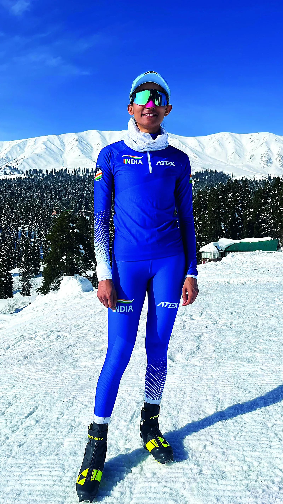
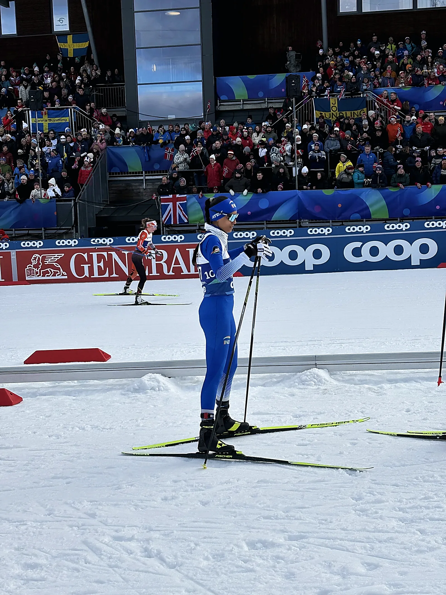
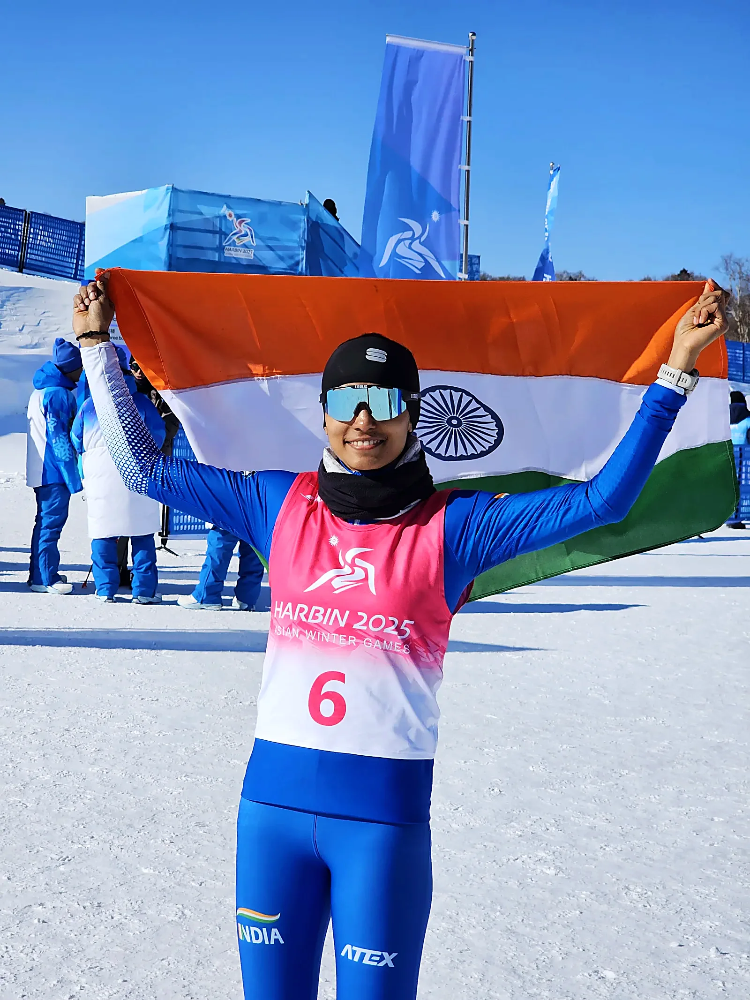

World Cup starts
FIS Cross-Country World Cup · 2025



Indian cross-country skier
Pioneering India’s path
in cross-country skiing.
When the path doesn’t exist, you build one. From the coffee estates of Kodagu to international start lines, Bhavani Thekkada has forged a journey across continents, climates and seasons. In a sport with few pathways in India, she became the country’s first woman to win an international cross-country skiing medal. And she is still moving forward.

Who she is
In 2013, a Bollywood film sparked her curiosity about the mountains. What began with an NCC mountaineering camp in Manali led her into mountaineering, eventually to a career as a mountaineering instructor in Darjeeling, and later to Kashmir, where she first discovered skiing.
In 2018, while training in alpine skiing in Kashmir, she came across the Norwegian legend Marit Bjørgen racing cross-country at the Winter Olympics. It was her first glimpse of the sport, and it stayed with her. Two years later she finally had the chance to try it herself, and what began as a chance to try something new became a passion. In 2021 she decided to pursue cross-country skiing full time.
Her father, Thekkada Nanjunda, has spent his life on the coffee farm. He never asked her to choose the conventional path. His advice was simple: if it makes you happy, do it.
The record
FIS Cross-Country World Cup · 2025
Nordic World Ski Championships · 2023 & 2025
Asian Winter Games · 2025
FIS & international competition
National & Khelo India competitions
The sport
Cross-country skiing is endurance racing on snow.
Athletes use skis and poles to race across changing terrain, climbing and descending entirely under their own power.
Forward, parallel movement similar to running on skis.
Outward skating movement designed for greater speed.
Race formats
Short. Fast. Explosive.
Longer. Tactical. Endurance-led.
Bhavani races both techniques across sprint and distance events.
The journey
Six seasons, fourteen race locations, both hemispheres.
The archive
13 stories in print, 19 photographs from her own archive.